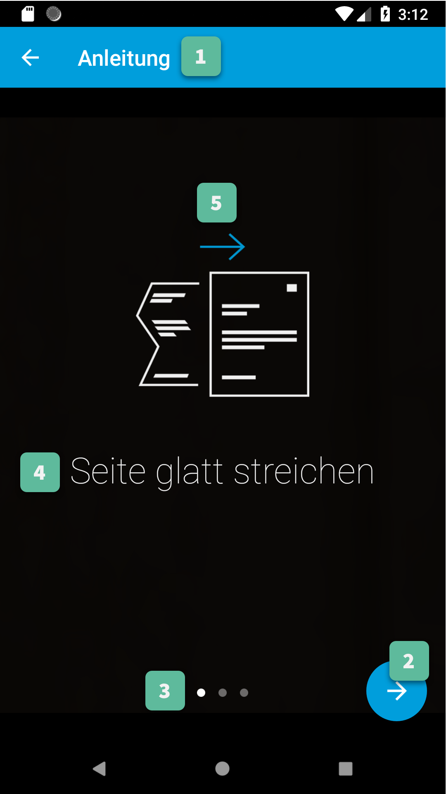
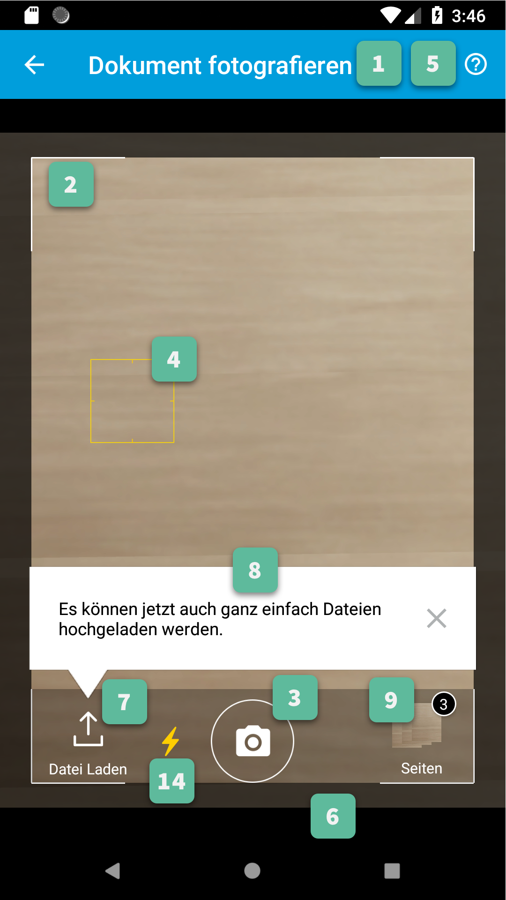

Gini Capture SDK for Android¶
Introduction¶
The Gini Capture SDK for Android provides Activities and Fragments to capture documents and prepare them for upload to the Gini Pay API. It also allows documents to be imported from other apps. The captured images can be reviewed and are optimized on the device to provide the best results when used with the Gini Pay API.
The Gini Pay API provides an information extraction service for analyzing documents (e.g. invoices or contracts). Specifically it extracts information such as the document sender or the payment relevant information (amount to pay, IBAN, etc.) in an invoice.
Table of contents¶
Getting started¶
Requirements¶
In addition to the minimum Android version we also have hardware requirements to ensure the best possible analysis results:
Android 5.0+ (API Level 21+)
Phone Hardware
- Back-facing camera with auto-focus and flash.
- Minimum 8MP camera resolution.
- Minimum 512MB RAM.
Tablet Hardware
- Back-facing camera with auto-focus.
- Minimum 8MP camera resolution.
- Minimum 512MB RAM.
Installation¶
The Gini Capture SDK is available in our maven repository which you need to add to your build.gradle first:
repositories {
maven {
url 'https://repo.gini.net/nexus/content/repositories/open'
}
}
Now you can add the Gini Capture SDK to your app’s dependencies:
dependencies {
implementation 'net.gini:gini-capture-sdk:1.4.1'
}
After syncing Gradle you can start integrating the Gini Capture SDK.
Integration¶
Android Manifest¶
The Gini Capture SDK uses the camera therefore the camera permission is required:
<manifest xmlns:android="http://schemas.android.com/apk/res/android"
package="...">
<uses-permission android:name="android.permission.CAMERA" />
</manifest>
Note
Make sure you request the camera permission before starting the SDK.
Requirements Check¶
We recommend running our runtime requirements check first before launching the Gini Capture SDK to ensure the device is capable of taking pictures of adequate quality.
Simply run GiniCaptureRequirements.checkRequirements() and inspect the returned RequirementsReport for the result:
Note
On Android 6.0 and later the camera permission is required before checking the requirements.
final RequirementsReport report = GiniCaptureRequirements.checkRequirements(this);
if (!report.isFulfilled()) {
final StringBuilder stringBuilder = new StringBuilder();
report.getRequirementReports().forEach(requirementReport -> {
if (!requirementReport.isFulfilled()) {
stringBuilder.append(requirementReport.getRequirementId());
stringBuilder.append(": ");
stringBuilder.append(requirementReport.getDetails());
stringBuilder.append("\n");
}
});
Toast.makeText(this, "Requirements not fulfilled:\n" + stringBuilder,
Toast.LENGTH_LONG).show();
}
Configuration¶
Configuration and interaction is done using the GiniCapture singleton.
To configure and create a new instance use the GiniCapture.Builder returned by GiniCapture.newInstance(). The builder creates a new GiniCapture singleton which you will need to destroy later with GiniCapture.getInstance().cleanup(). This will also free up any used resources.
You should call cleanup() after the SDK returned control to your application and your app has sent feedback to the Gini Pay API and is not using the SDK anymore.
To view all the configuration options see the documentation of GiniCapture.Builder.
Information about the configurable features are available on the Features page.
Tablet Support¶
The Gini Capture SDK can be used on tablets, too. Some UI elements adapt to the larger screen to offer the best user experience for tablet users.
Many tablets with at least 8MP cameras don’t have an LED flash. Therefore we don’t require flash for tablets. For this reason the extraction quality on those tablets might be lower compared to smartphones.
On tablets landscape orientation is also supported (smartphones are portrait only). We advise you to test your integration on tablets in both orientations.
In landscape the camera screen’s UI displays the camera trigger button on the right side of the screen. Users can reach the camera trigger more easily this way. The camera preview along with the document corner guides are shown in landscape to match the device’s orientation.
Other UI elements on all the screens maintain their relative position and the screen layouts are scaled automatically to fit the current orientation.
Networking¶
Communication with the Gini Pay API is not part of the Gini Capture SDK in order to allow you the freedom to use a networking implementation of your own choosing.
Note
You should have received Gini Pay API client credentials from us. Please get in touch with us in case you don’t have them. Without credentials you won’t be able to use the Gini Pay API.
We provide two interfaces which need to be implemented to enable the SDK to analyze documents and retrieve extractions:
- GiniCaptureNetworkService
This interface is used to upload, analyze and delete documents. See the reference documentation for details.
- GiniCaptureNetworkApi
This interface is used to declare network tasks which should be called by you outside of the Gini Capture SDK (e.g., for sending feedback after the user saw and potentielly corrected the extractions). See the reference documentation for details.
Default Implementation¶
The quickest way to add networking is to use the Gini Capture Network Library.
To use it add the gini-capture-network-lib dependency to your app’s build.gradle:
dependencies {
...
implementation 'net.gini:gini-capture-network-lib:1.4.1'
}
For the Gini Capture SDK to be aware of the default implementations create the instances and pass them to the builder of GiniCapture:
GiniCaptureDefaultNetworkService networkService =
GiniCaptureDefaultNetworkService.builder((Context) this)
.setClientCredentials(myClientId, myClientSecret, myEmailDomain)
.build();
GiniCaptureDefaultNetworkApi networkApi =
GiniCaptureDefaultNetworkApi.builder()
.withGiniCaptureDefaultNetworkService(networkService)
.build();
GiniCapture.newInstance()
.setGiniCaptureNetworkService(networkService)
.setGiniCaptureNetworkApi(networkApi)
.build();
Both default implementations follow the builder pattern. See the documentation of GiniCaptureDefaultNetworkService.Builder and GiniCaptureDefaultNetworkApi.Builder for configuration options.
Custom Implementation¶
You can also provide your own networking by implementing the GiniCaptureNetworkService and the GiniCaptureNetworkApi interfaces. Pass your instances to the builder of GiniCapture as shown above.
You may also use the Gini Pay API Library for Android or implement communication with the Gini API yourself.
Sending Feedback¶
Your app should send feedback for the extractions the Gini Pay API delivered. Feedback should be sent only for the extractions the user has seen and accepted (or corrected).
For additional information about feedback see the Gini Pay API documentation.
Default Implementation¶
The example below shows how to correct extractions and send feedback using the default networking implementation:
GiniCaptureDefaultNetworkApi networkApi; // Provided
Map<String, GiniCaptureSpecificExtraction> extractions; // Provided
// Modify the amount to pay extraction's value.
GiniCaptureSpecificExtraction amountToPay = extractions.get("amountToPay");
amountToPay.setValue("31:00");
// You should send feedback only for extractions the user has seen and accepted.
// In this example only the amountToPay was wrong and we can reuse the other extractions.
Map<String, GiniCaptureSpecificExtraction> feedback = new HashMap<String, GiniCaptureSpecificExtraction>();
feedback.put("iban", extractions.get("iban"));
feedback.put("amountToPay", amountToPay);
feedback.put("bic", extractions.get("bic"));
feedback.put("senderName", extractions.get("senderName"));
networkApi.sendFeedback(feedback, new GiniCaptureNetworkCallback<Void, Error>() {
@Override
public void failure(Error error) {
// Handle the error.
}
@Override
public void success(Void result) {
// Feedback sent successfully.
}
@Override
public void cancelled() {
// Handle cancellation.
}
});
Custom Implementation¶
If you use your own networking implementation and directly communicate with the Gini Pay API then see this section in its documentation on how to send feedback.
In case you use the Gini Pay API Library then see this section in its documentation for details.
Capturing documents¶
The Gini Capture SDK can be used in two ways, either by using the Screen API or the Component API:
- The Screen API provides activities for easy integration that can be customized in a limited way. The screen and configuration design is based on our long-lasting experience with integration in customer apps.
- In the Component API we provide fragments for advanced integration with more freedom for customization.
Screen API¶
This is the easiest way to use the SDK. You only need to:
- Request camera access,
- Configure a new instance of GiniCapture,
- Launch the CameraActivity,
- Handle the result.
Note
Check out the Screen API example app to see how an integration could look like.
The CameraActivity can return with the following result codes:
Activity.RESULT_OK
Document was analyzed and the extractions are available in the EXTRA_OUT_EXTRACTIONS result extra. It contains a Bundle with the extraction labels as keys and GiniCaptureSpecificExtraction parcelables as values.
Activity.RESULT_CANCELED
User has canceled the Gini Capture SDK.
CameraActivity.RESULT_ERROR
An error occured and the details are available in the EXTRA_OUT_ERROR result extra. It contains a parcelable extra of type GiniCaptureError detailing what went wrong.
The following example shows how to launch the Gini Capture SDK using the Screen API and how to handle the results:
void launchGiniCapture() {
// Make sure camera permission has been already granted at this point.
// Check that the device fulfills the requirements.
RequirementsReport report = GiniCaptureRequirements.checkRequirements((Context) this);
if (!report.isFulfilled()) {
handleUnfulfilledRequirements(report);
return;
}
// Instantiate the networking implementations.
GiniCaptureNetworkService networkService = ...
GiniCaptureNetworkApi networkApi = ...
// Cleanup GiniCapture to make sure everything is reset.
GiniCapture.cleanup((Context) this);
// Configure GiniCapture and create a new singleton instance.
GiniCapture.newInstance()
.setGiniCaptureNetworkService(networkService)
.setGiniCaptureNetworkApi(networkApi)
...
.build();
// Launch the CameraActivity and wait for the result.
Intent intent = new Intent(this, CameraScreenApiActivity.class);
startActivityForResult(intent, GINI_CAPTURE_REQUEST);
}
@Override
protected void onActivityResult(final int requestCode, final int resultCode,
final Intent data) {
super.onActivityResult(requestCode, resultCode, data);
if (requestCode == GINI_CAPTURE_REQUEST) {
switch (resultCode) {
case Activity.RESULT_CANCELED:
break;
case Activity.RESULT_OK:
// Retrieve the extractions
Bundle extractionsBundle = data.getBundleExtra(
CameraActivity.EXTRA_OUT_EXTRACTIONS);
// Retrieve the extractions from the extractionsBundle
Map<String, GiniCaptureSpecificExtraction> extractions = new HashMap<>();
for (String extractionLabel : extractionsBundle.keySet()) {
GiniCaptureSpecificExtraction extraction = extractionsBundle.getParcelable(extractionLabel);
extractions.put(extractionLabel, extraction);
}
handleExtractions(extractions);
break;
case CameraActivity.RESULT_ERROR:
// Something went wrong, retrieve and handle the error
final GiniCaptureError error = data.getParcelableExtra(
CameraActivity.EXTRA_OUT_ERROR);
if (error != null) {
handleError(error);
}
break;
}
}
}
Component API¶
This is the more complicated way of using the SDK. The advantage is that it is based on fragments and you have full control over how these are shown in your UI.
Note
Check out the Component API example app to see how an integration could look like.
There is also one activity for showing the help screen. This is not a fragment in order to avoid overcomplicating the Component API integration.
The fragments extend androidx.fragment.app.Fragment and to make it clear, that they are not native fragments we suffix them with Compat.
Each fragment has a createInstance() factory method. Some require arguments and those will have to be passed to this factory method.
Fragments also have a listener through which they inform you about events and which next fragment should be shown. The result will be also returned through a listener method. The listener can be set either explicitly on the fragment or implicitly by making the host activity implement the listener interface.
The following diagram shows the possible flows through the SDK based on the listener method invocations. For brevity each fragment’s listener is shown next to it. In your integration you will provide the listener implementations and handle the listener method calls. You should navigate to the appropriate fragment based on this diagram:

CameraFragmentCompat¶
This is the entry point and should be launched first. These are the steps you should follow to start the CameraFragmentCompat:
- Request camera access,
- Configure a new instance of GiniCapture,
- Create a new instance of CameraFragmentCompat using it’s createInstance factory method,
- Provide a listener either using setListener() or making the host activity implement CameraFragmentListener,
- Create a GiniCaptureCoordinator and set a listener to know when to show the OnboardingFragmentCompat,
- Show the CameraFragmentCompat and handle listener method invocations.
It shows a camera preview with document corner guides and tap-to-focus functionality, a trigger button and an optional flash on/off button, import button and images stack when capturing multiple pages.
A CameraFragmentListener instance must be available before it is attached to an activity. Failing to do so will throw an exception. The listener instance can be provided either implicitly by making the host activity implement the CameraFragmentListener interface or explicitly by setting the listener using setListener().
See the reference documentation of this fragment’s public interface and it’s listener for more details.
This coordinator helps to implement the default behavior of the SDK. For example it helps to show the onboarding screen at first launch.
See the reference documentation for details.
OnboardingFragmentCompat¶
This fragment shows the onboarding screen. You can use the GiniCaptureCoordinator to know when to show it. You can also implement a button to allow users to view it on demand.
It displays important advice for correctly photographing a document.
The default way of showing this fragment is as an overlay above the camera screen with a semi-transparent background.
By default an empty last page is added to enable the revealing of the camera preview before this fragment is dismissed. You can disable this by using the appropriate createInstance...() factory method.
If you would like to display a different number of pages, you can use the factory methods and provide a list of OnboardingPage objects.
An OnboardingFragmentListener instance must be available before the fragment is attached to an activity. Failing to do so will throw an exception. The listener instance can be provided either implicitly by making the host activity implement the OnboardingFragmentListener interface or explicitly by setting the listener using setListener().
See the reference documentation, public interface and listener for details.
HelpActivity¶
This activity shows the help screen. The content of this screen depends on how GiniCapture was configured. You can also add custom screens during configuration.
You need to add a button to your UI to launch the HelpActivity. It requires no extras and can be launched with a simple intent.
See the reference documentation for details.
ReviewFragmentCompat¶
This fragment shows the single page document review screen. This should be only used if multi-page document scanning was not enabled.
It displays the photographed or imported image and allows the user to review it by checking the sharpness, quality and orientation of the image. The user can correct the orientation by rotating the image.
A ReviewFragmentListener instance must be available before the ReviewFragmentCompat is attached to an activity. Failing to do so will throw an exception. The listener instance can be provided either implicitly by making the host activity implement the ReviewFragmentListener interface or explicitly by setting the listener using setListener().
See the reference documentation, public interface and listener for details.
MultiPageReviewFragment¶
This fragment shows the multi-page document review screen. This should be only used if multi-page document scanning was enabled.
It displays the photographed or imported images and allows the user to review them by checking the order, sharpness, quality and orientation of the images. The user can correct the order by dragging the thumbnails of the images and can also correct the orientation by rotating the images.
A MultiPageReviewFragmentListener instance must be available before it is attached to an activity. Failing to do so will throw an exception. The listener instance can be provided either implicitly by making the host activity implement the MultiPageReviewFragmentListener interface or explicitly by setting the listener using setListener().
See the reference documentation, public interface and listener for details.
AnalysisFragmentCompat¶
This fragment shows the analysis screen. It displays the captured or imported document and an activity indicator while the document is being analyzed by the Gini Pay API. For PDF documents the first page is shown along with the PDF’s filename and number of pages above the page.
An AnalysisFragmentListener instance must be available before it is attached to an activity. Failing to do so will throw an exception. The listener instance can be provided either implicitly by making the host activity implement the AnalysisFragmentListener interface or explicitly by setting the listener using setListener().
See the reference documentation, public interface and listener for details.
NoResultsFragmentCompat¶
This fragment shows the no results screen. It displays hints that inform the user how to best take pictures of documents and also shows a button to return to the camera screen to retry the document capture.
Your Activity must implement the NoResultsFragmentListener interface to receive events from the fragment. Failing to do so will throw an exception.
See the reference documentation and listener for details.
Features¶
The Gini Capture SDK provides various features you can enable and configure. All of the features are configured during creation of a new GiniCapture instance. Specifically the GiniCapture.Builder is used to configure the Gini Capture SDK. It’s reference documentation lists all the options.
Note
Some features require additional contractual aggreements and may not be used without prior confirmation. Please get in touch with us in case you are not sure which features your contract includes.
The following sections list all the features along with the related configuration options.
Document Capture¶
This is the core feature of the Gini Capture SDK. It enables your app to capture documents with the camera and prepares them to be analysed by the Gini Pay API.
Onboarding¶
The onboarding feature presents essential information to the user on how to best capture documents.
You can customize the onboarding in the following ways:
- Disable showing the onboarding at first run:
By default the onboarding is shown at first run. To disable this pass false to GiniCapture.Builder.setShouldShowOnboardingAtFirstRun().
- Customize the onboarding pages:
If you wish to show different onboarding pages then pass a list of OnboardingPage objects to GiniCapture.Builder.setCustomOnboardingPages().
- Force show the onboarding:
If you wish to show the onboarding after the first run then pass true to GiniCapture.Builder.setShouldShowOnboarding().
Single Page¶
By default the Gini Capture SDK is configured to capture single page documents. No further configuration is required for this.
Important
If you integrate using the Component API you will need to launch the ReviewFragmentCompat when the CameraFragmentListener.onDocumentAvailable() is invoked. See the Component API section for further details.
Multi-Page¶
The multi-page feature allows the SDK to capture documents with multiple pages.
To enable this simply pass true to GiniCapture.Builder.setMultiPageEnabled().
Important
If you integrate using the Component API you will need to launch the MultiPageReviewFragment when the CameraFragmentListener.onProceedToMultiPageReviewScreen() is invoked. See the Component API section for further details.
Camera¶
- Enable the flash toggle button:
To allow users toggle the camera flash pass true to GiniCapture.Builder.setFlashButtonEnabled().
- Turn off flash by default:
Flash is on by default and you can turn it off by passing false to GiniCapture.Builder.setFlashOnByDefault().
QR Code Scanning¶
By using the Google Mobile Vision API the SDK can read payment data from QR Codes. We support the BezahlCode , EPC069-12 (Stuzza (AT) and GiroCode (DE)) and EPS formats.
When a supported QR code is detected with valid payment data a popup is shown in the camera screen. The user may tap the popup to use the payment data directly without the need to analyse the document.
If the QR code does not have a supported payment format then a popup informs the user that a QR code was detected but it cannot be used.
After the user tapped on the QR code detected popup the payment information is extracted form the QR code. The result is returned either in the result of the CameraActivity (Screen API) or in the CameraFragmentListener.onExtractionsAvailable() method (Component API).
QR Code Scanning is available on devices running Android with Google Play Services installed.
To enable this feature simply pass true to GiniCapture.Builder.setQRCodeScanningEnabled.
Important
When your application is installed Google Mobile Services will download libraries to the device in order to do QR code detection. If another app already uses QR code detection on the device the library won’t be downloaded again. Under certain circumstances (user not online, slow connection or lack of sufficient storage space) the libraries will not be ready at the time your app starts the camera screen and QR code detection will be silently disabled until the next time the camera screen starts.
Document Import¶
This feature enables the Gini Capture SDK to import documents from the camera screen. When it’s enabled an additional button is shown next to the camera trigger. Using this button allows the user to pick either an image or a pdf from the device.
You can specify the document types the user will be able to select when enabling this feature. You can enable only images, only pdfs or both images and pdfs.
To enable it simply pass a DocumentImportEnabledFileTypes enum value to GiniCapture.Builder.setDocumentImportEnabledFileTypes().
Android Manifest¶
You will also need to declare the READ_EXTERNAL_STORAGE permission in your app’s AndroidManifest.xml:
<manifest xmlns:android="http://schemas.android.com/apk/res/android"
package="...">
<uses-permission android:name="android.permission.READ_EXTERNAL_STORAGE" />
</manifest>
If the permission has not been granted the Gini Capture SDK will prompt the user to grant the permission when they use the document import feature.
Intercepting the imported document¶
You can intercept the imported document and deny the Gini Capture SDK from using it.
If you use the Screen API then you need to subclass the CameraActivity and override the onCheckImportedDocument method. See it’s reference documentation for details.
With the Component API you can intercept the document in the CameraFragmentListener.onCheckImportedDocument() method. The method signature and usage is the same as above.
File Import (Open With)¶
The file import (or “open with”) feature allows importing of files from other apps via Android’s “open with” or “share” functionality.
Note
We are using the term file import to refer to the “open with” feature within the Gini Capture SDK. From the point of view of the SDK files are imported into the SDK from an outside source. It is not aware and cannot set configuration related to enabling the client app to receive files via Android’s “open with” or “share” functionality.
To enable it pass true to GiniCapture.Builder.setFileImportEnabled().
In addition to enabling it your app needs to declare intent filters for receiving pdfs and/or images from other apps and then forward the incoming intent to the Gini Capture SDK.
Registering pdf and image file types¶
Add the following intent filter to the activity in your AndroidManifest.xml you wish to receive incoming pdfs and images:
<activity android:name=".ui.MyActivity">
<!-- Receiving images: -->
<intent-filter
android:label="@string/label_for_image_open_with">
<action android:name="android.intent.action.VIEW" />
<action android:name="android.intent.action.SEND" />
<!-- The below SEND_MULTIPLE action is only needed if you enabled scanning of multi-page documents: -->
<action android:name="android.intent.action.SEND_MULTIPLE" />
<category android:name="android.intent.category.DEFAULT" />
<data android:mimeType="image/*" />
</intent-filter>
<!-- Receiving pdfs: -->
<intent-filter
android:label="@string/label_for_pdf_open_with">
<action android:name="android.intent.action.VIEW" />
<action android:name="android.intent.action.SEND" />
<category android:name="android.intent.category.DEFAULT" />
<data android:mimeType="application/pdf" />
</intent-filter>
</activity>
Note
We recommend adding ACTION_VIEW to the intent filter to also allow users to send pdfs and images to your app from apps that don’t implement sharing with ACTION_SEND but enable viewing the pdf or file with other apps.
Handling Imported Files¶
When your app is requested to handle a pdf or an image your activity (declaring the intent filter shown above) is launched or resumed (onNewIntent()) with an Intent having ACTION_VIEW or ACTION_SEND.
We recommend checking whether the Intent has the required action before proceeding with it:
String action = intent.getAction();
if (Intent.ACTION_VIEW.equals(action) || Intent.ACTION_SEND.equals(action)) {
...
}
Screen API¶
Using the Screen API, create an Intent for launching the Gini Capture SDK with GiniCapture.getInstance().createIntentForImportedFile() or if you enabled scanning of multi-page documents GiniCapture.getInstance().createIntentForImportedFiles(). The first method will throw an ImportedFileValidationException, if the file was invalid and the latter will return the same exception in the callback.
void startGiniCaptureSDKForImportedFile(final Intent importedFileIntent) {
// Configure the Gini Capture SDK first
configureGiniCapture();
if (GiniCapture.hasInstance() && GiniCapture.getInstance().isMultiPageEnabled()) {
mFileImportCancellationToken = GiniCapture.getInstance().createIntentForImportedFiles(
importedFileIntent, (Context) this,
new AsyncCallback<Intent, ImportedFileValidationException>() {
@Override
public void onSuccess(final Intent result) {
mFileImportCancellationToken = null;
startActivityForResult(result, REQUEST_SCAN);
}
@Override
public void onError(final ImportedFileValidationException exception) {
mFileImportCancellationToken = null;
handleFileImportError(exception);
}
@Override
public void onCancelled() {
mFileImportCancellationToken = null;
}
});
} else {
try {
final Intent giniCaptureIntent =
GiniCapture.createIntentForImportedFile(
importedFileIntent,
(Context) this, null, null);
startActivityForResult(giniCaptureIntent, REQUEST_SCAN);
} catch (final ImportedFileValidationException e) {
e.printStackTrace();
handleFileImportError(e);
}
}
}
void handleFileImportError(final ImportedFileValidationException exception) {
String message = ...
if (exception.getValidationError() != null) {
// Get the default message
message = getString(exception.getValidationError().getTextResource());
// Or use custom messages
switch (exception.getValidationError()) {
case TYPE_NOT_SUPPORTED:
message = ...
break;
case SIZE_TOO_LARGE:
message = ...
break;
case TOO_MANY_PDF_PAGES:
message = ...
break;
case PASSWORD_PROTECTED_PDF:
message = ...
break;
case TOO_MANY_DOCUMENT_PAGES:
message = ...
break;
}
}
new AlertDialog.Builder((Context) this)
.setMessage(message)
.setPositiveButton("OK", (dialogInterface, i) -> finish())
.show();
}
If scanning of multi-page documents is enabled then either the multi-page review screen or the analysis screen will be launched. PDFs cannot be reviewed by the user and in that case the analysis screen is launched directly. You should not expect the review screen to be launched every time.
When multi-page is disabled then the difference is only that the single-page review screen will be used instead.
Component API¶
For the Component API, create a Document with with GiniCapture.getInstance().createDocumentForImportedFile() or if you enabled scanning of multi-page documents GiniCapture.getInstance().createDocumentForImportedFiles(). The first method will throw an ImportedFileValidationException, if the file was invalid and the latter will return the same exception in the callback.
The ReviewFragment or MultiPageReviewFragment may only be used with reviewable documents. Therefore, it is important to check whether the document is reviewable or not:
void startGiniCaptureSDKForImportedFile(final Intent importedFileIntent) {
// Configure the Gini Capture SDK first
configureGiniCapture();
if (GiniCapture.hasInstance() && GiniCapture.getInstance().isMultiPageEnabled()) {
mFileImportCancellationToken = GiniCapture.getInstance().createDocumentForImportedFiles(
importedFileIntent, (Context) this,
new AsyncCallback<Document, ImportedFileValidationException>() {
@Override
public void onSuccess(@NonNull final Document result) {
if (result.isReviewable()) {
launchMultiPageReviewScreen();
} else {
launchAnalysisScreen(result);
}
finish();
}
@Override
public void onError(
@NonNull final ImportedFileValidationException exception) {
handleFileImportError(exception); // same method as in the Screen API example
}
@Override
public void onCancelled() {
}
});
} else {
try {
final Document document = GiniCapture.createDocumentForImportedFile(
importedFileIntent, (Context) this);
if (document.isReviewable()) {
launchReviewScreen(document);
} else {
launchAnalysisScreen(document);
}
finish();
} catch (final ImportedFileValidationException e) {
e.printStackTrace();
handleFileImportError(e); // same method as in the Screen API example
}
}
}
Help Screen Customization¶
You can show your own help screens in the Gini Capture SDK. You can pass the title and activity for each screen to the GiniCapture.Builder using a list of HelpItem.Custom objects:
List<HelpItem.Custom> customHelpItems = new ArrayList<>();
customHelpItems.add(new HelpItem.Custom(R.string.custom_help_screen_title,
new Intent((Context) this, CustomHelpActivity.class)));
GiniCapture.newInstance()
.setCustomHelpItems(customHelpItems)
.build();
You can also disable the supported formats help screen by passing false to GiniCapture.Builder.setSupportedFormatsHelpScreenEnabled().
Event Tracking¶
You have the possibility to track various events which occur during the usage of the Gini Capture SDK.
To subscribe to the events you need to implement the EventTracker interface and pass it to the builder when creating a new GiniCapture instance:
GiniCapture.newInstance()
.setEventTracker(new MyEventTracker());
.build();
In MyEventTracker you can handle the events you are interested in.
class MyEventTracker implements EventTracker {
@Override
public void onCameraScreenEvent(final Event<CameraScreenEvent> event) {
switch (event.getType()) {
case TAKE_PICTURE:
// handle the picture taken event
break;
case HELP:
// handle the show help event
break;
case EXIT:
// handle the exit event
break;
}
}
@Override
public void onOnboardingScreenEvent(final Event<OnboardingScreenEvent> event) {
(...)
}
@Override
public void onAnalysisScreenEvent(final Event<AnalysisScreenEvent> event) {
(...)
}
@Override
public void onReviewScreenEvent(final Event<ReviewScreenEvent> event) {
(...)
}
}
Note
If you use the Screen API all events will be triggered automatically.
If you use the Component API some events will not be triggered (for ex. events which rely on Activity#onBackPressed()). You can check in the table below whether all the events you are interested in are triggered.
To manually trigger events just call the relevant method of your EventTracker implementation with the required event.
Events¶
Event types are partitioned into different domains according to the screens that they appear on. Each domain has a number of event types. Some events may supply additional details in a map.
| API | Domain | Event enum value and details map keys | Comment | Introduced in (updated in) |
|---|---|---|---|---|
| Screen + Component | Onboarding | OnboardingScreenEvent.START | Onboarding started | 1.0.0 |
| Screen + Component | Onboarding | OnboardingScreenEvent.FINISH | User completes onboarding | 1.0.0 |
| Screen | Camera Screen | CameraScreenEvent.EXIT | User closes the camera screen | 1.0.0 |
| Screen | Camera Screen | CameraScreenEvent.HELP | User taps “Help” on the camera screen | 1.0.0 |
| Screen + Component | Camera Screen | CameraScreenEvent.TAKE_PICTURE | User takes a picture | 1.0.0 |
| Screen | Review Screen | ReviewScreenEvent.BACK | User goes back from the review screen | 1.0.0 |
| Screen + Component | Review Screen | ReviewScreenEvent.NEXT | User advances from the review screen | 1.0.0 |
| Screen + Component | Review Screen | ReviewScreenEvent.UPLOAD_ERROR ReviewScreenEvent.UPLOAD_ERROR_DETAILS_MAP_KEY.MESSAGE ReviewScreenEvent.UPLOAD_ERROR_DETAILS_MAP_KEY.ERROR_OBJECT | Upload error in the review screen | 1.0.0 |
| Screen | Analysis Screen | AnalysisScreenEvent.CANCEL | User cancels the process during analysis | 1.0.0 |
| Screen + Component | Analysis Screen | AnalysisScreenEvent.ERROR AnalysisScreenEvent.ERROR_DETAILS_MAP_KEY.MESSAGE AnalysisScreenEvent.ERROR_DETAILS_MAP_KEY.ERROR_OBJECT | The analysis ended with an error. | 1.0.0 |
| Screen + Component | Analysis Screen | AnalysisScreenEvent.RETRY | The user decides to retry after an analysis error. | 1.0.0 |
The supported events are listed for each screen in a dedicated enum. You can view these enums in our reference documentation.
Error Logging¶
The SDK logs errors to the Gini Pay API when the default networking implementation is used (see the Default networking implementation section).
You can disable the default error logging by passing false to GiniCapture.Builder.setGiniErrorLoggerIsOn().
If you would like to get informed of error logging events you can pass your implementation of the ErrorLoggerListener interface to GiniCapture.Builder:
GiniCapture.newInstance()
.setCustomErrorLoggerListener(new MyErrorLoggerListener())
.build();
Customization Guide¶
Customization of the Views is provided mostly via overriding of app resources: dimensions, strings, colors, texts, etc. Onboarding can also be customized to show your own pages, each consisting of an image and a short text.
Onboarding Screen¶
1. Action Bar¶
All Action Bar customizations except the title are global to all Activities.
Title
Via the string resource named gc_title_onboarding.
Title Color
Via the color resource named gc_action_bar_title.
Back Button Icon
Via images for mdpi, hdpi, xhdpi, xxhdpi, xxxhdpi named gc_action_bar_back.
Background Color
Via the color resource named gc_action_bar.
Status Bar Background Color
Via the color resource named gc_status_bar.
2. Next Button¶
Icon
Via images for mdpi, hdpi, xhdpi, xxhdpi, xxxhdpi named gc_onboarding_fab_next.png.
Color
Via the color resources named gc_onboarding_fab and gc_onboarding_fab_pressed.
3. Page Indicators¶
Active
Via images for mdpi, hdpi, xhdpi, xxhdpi, xxxhdpi named gc_onboarding_indicator_active.png.
Inactive
Via images for mdpi, hdpi, xhdpi, xxhdpi, xxxhdpi named gc_onboarding_indicator_inactive.png.
4. Onboarding Message¶
Color
Via the color resource named gc_onboarding_message.
Text Style
Via overriding the style named GiniCaptureTheme.Onboarding.Message.TextStyle (with parent style Root.GiniCaptureTheme.Onboarding.Message.TextStyle).
Font
Via overriding the style named GiniCaptureTheme.Onboarding.Message.TextStyle (with parent style Root.GiniCaptureTheme.Onboarding.Message.TextStyle) and setting an item named gcCustomFont with the path to the font file in your assets folder.
5. Onboarding Pages¶
Default Pages
Phone
First Page
Image
Via images for mdpi, hdpi, xhdpi, xxhdpi, xxxhdpi named gc_onboarding_flat.png.
Text
Via the string resource named gc_onboarding_flat.
Second Page
Image
Via images for mdpi, hdpi, xhdpi, xxhdpi, xxxhdpi named gc_onboarding_parallel.png.
Text
Via the string resource named gc_onboarding_parallel.
Third Page
Image
Via images for mdpi, hdpi, xhdpi, xxhdpi, xxxhdpi named gc_onboarding_align.png.
Text
Via the string resource named gc_onboarding_align.
Fourth Page
Visible only if the multi-page feature has been enabled.
Image
Via images for mdpi, hdpi, xhdpi, xxhdpi, xxxhdpi named gc_onboarding_multipage.png.
Text
Via the string resource named gc_onboarding_multipage.
Tablet
First Page
Image
Via images for sw600dp-mdpi, sw600dp-hdpi, sw600dp-xhdpi, sw600dp-xxhdpi, sw600dp-xxxhdpi named gc_onboarding_lighting.png.
Text
Via the string resource named gc_onboarding_ligthing.
Second Page
Image
Via images for sw600dp-mdpi, sw600dp-hdpi, sw600dp-xhdpi, sw600dp-xxhdpi, sw600dp-xxxhdpi named gc_onboarding_flat.png.
Text
Via the string resource named gc_onboarding_flat.
Third Page
Image
Via images for sw600dp-mdpi, sw600dp-hdpi, sw600dp-xhdpi, sw600dp-xxhdpi, sw600dp-xxxhdpi named gc_onboarding_parallel.png.
Text
Via the string resource named gc_onboarding_parallel.
Fourth Page
Image
Via images for sw600dp-mdpi, sw600dp-hdpi, sw600dp-xhdpi, sw600dp-xxhdpi, sw600dp-xxxhdpi named gc_onboarding_align.png.
Text
Via the string resource named gc_onboarding_align.
Fifth Page
Visible only if the multi-page feature has been enabled.
Image
Via images for mdpi, hdpi, xhdpi, xxhdpi, xxxhdpi named gc_onboarding_multipage.png.
Text
Via the string resource named gc_onboarding_multipage.
Custom Pages
You can change the number of displayed pages and their content (image and short text) by setting an ArrayList containing OnboardingPage objects when building a GiniCapture instance with setCustomOnboardingPages().
If you don’t use GiniCapture yet you can also provide the list using the extra CameraActivity.EXTRA_IN_ONBOARDING_PAGES for the Screen API and OnboardingFragmentCompat.createInstance(ArrayList<OnboardingPage>) for the Component API.
Background
Color
Via the color resource named gc_background. Note: this color resource is global to all Activities.
Transparency
Via the string resource named gc_onboarding_page_fragment_background_alpha which must contain a real number between [0,1].
Camera Screen¶



1. Action Bar¶
All Action Bar customizations except the title are global to all Activities.
Title
Via the string resource named gc_title_camera.
Title Color
Via the color resource named gc_action_bar_title.
Back Button Icon
Via images for mdpi, hdpi, xhdpi, xxhdpi, xxxhdpi named gc_action_bar_back.
Background Color
Via the color resource named gc_action_bar.
Status Bar Background Color
Via the color resource named gc_status_bar.
2. Document Corner Guides¶
Color
Via the color resource named gc_camera_preview_corners.
3. Camera Trigger Button¶
Normal
Via images for mdpi, hdpi, xhdpi, xxhdpi, xxxhdpi named gc_camera_trigger_default.png.
Pressed
Via images for mdpi, hdpi, xhdpi, xxhdpi, xxxhdpi named gc_camera_trigger_pressed.png.
4. Tap to Focus Indicator¶
Icon
Via images for mdpi, hdpi, xhdpi, xxhdpi, xxxhdpi named gc_camera_focus_indicator.png.
6. Background¶
Color
Via the color resource named gc_background. Note: this color resource is global to all Activities.
7. Document Import Button¶
Icon
Via images for mdpi, hdpi, xhdpi, xxhdpi, xxxhdpi named gc_document_import_icon.png.
Subtitle
Text
Via the string resource named gc_camera_document_import_subtitle.
Text Style
Via overriding the style named GiniCaptureTheme.Camera.DocumentImportSubtitle.TextStyle (with parent style Root.GiniCaptureTheme.Camera.DocumentImportSubtitle.TextStyle).
Font
Via overriding the style named GiniCaptureTheme.Camera.DocumentImportSubtitle.TextStyle (with parent style Root.GiniCaptureTheme.Camera.DocumentImportSubtitle.TextStyle) and setting an item named gcCustomFont with the path to the font file in your assets folder.
8. Hints¶
8.1 Document Import Hint¶
Background Color
Via the color resource named gc_document_import_hint_background.
Close Icon Color
Via the color resource name gc_hint_close.
Message
Text
Via the string resource named gc_document_import_hint_text.
Text Style
Via overriding the style named GiniCaptureTheme.Camera.DocumentImportHint.TextStyle (with parent style Root.GiniCaptureTheme.Camera.DocumentImportHint.TextStyle).
Font
Via overriding the style named GiniCaptureTheme.Camera.DocumentImportHint.TextStyle (with parent style Root.GiniCaptureTheme.Camera.DocumentImportHint.TextStyle) and setting an item named gcCustomFont with the path to the font file in your assets folder.
8.2 QR Code Scanner Hint¶
Background Color
Via the color resource named gc_document_import_hint_background.
Close Icon Color
Via the color resource name gc_hint_close.
Message
Text
Via the string resource named gc_qr_code_scanner_hint_text.
Text Style
Via overriding the style named GiniCaptureTheme.Camera.DocumentImportHint.TextStyle (with parent style Root.GiniCaptureTheme.Camera.DocumentImportHint.TextStyle).
Font
Via overriding the style named GiniCaptureTheme.Camera.DocumentImportHint.TextStyle (with parent style Root.GiniCaptureTheme.Camera.DocumentImportHint.TextStyle) and setting an item named gcCustomFont with the path to the font file in your assets folder.
9. Images Stack¶
Badge
Text Style
Via overriding the style named GiniCaptureTheme.Camera.ImageStackBadge.TextStyle (with parent style Root.GiniCaptureTheme.Camera.ImageStackBadge.TextStyle).
Font
Via overriding the style named GiniCaptureTheme.Camera.ImageStackBadge.TextStyle (with parent style Root.GiniCaptureTheme.Camera.ImageStackBadge.TextStyle) and setting an item named gcCustomFont with the path to the font file in your assets folder.
Background Color
Via the color resources named gc_camera_image_stack_badge_background and gc_camera_image_stack_badge_background_border.
Background Size
Via the dimension resource named gc_camera_image_stack_badge_size.
Subtitle
Text
Via the string resource named gc_camera_image_stack_subtitle.
Text Style
Via overriding the style named GiniCaptureTheme.Camera.ImageStackSubtitle.TextStyle (with parent style Root.GiniCaptureTheme.Camera.ImageStackSubtitle.TextStyle).
Font
Via overriding the style named GiniCaptureTheme.Camera.ImageStackSubtitle.TextStyle (with parent style Root.GiniCaptureTheme.Camera.ImageStackSubtitle.TextStyle) and setting an item named gcCustomFont with the path to the font file in your assets folder.
10. QRCode Detected Popup¶
Background Color
Payable QRCode
Via the color resource named gc_qrcode_detected_popup_background.
Unsupported QRCode
Via the color resource named gc_unsupported_qrcode_detected_popup_background.
Message
- Text
Payable QRCode
Via the string resources named gc_qrcode_detected_popup_message_1 and gc_qrcode_detected_popup_message_2.
Unsupported QRCode
Via the string resources named gc_unsupported_qrcode_detected_popup_message_1 and gc_unsupported_qrcode_detected_popup_message_2.
- Text Style
Payable QRCode
Via overriding the styles named GiniCaptureTheme.Camera.QRCodeDetectedPopup.Message1.TextStyle (with parent style Root.GiniCaptureTheme.Camera.QRCodeDetectedPopup.Message1.TextStyle) and GiniCaptureTheme.Camera.QRCodeDetectedPopup.Message2.TextStyle (with parent style Root.GiniCaptureTheme.Camera.QRCodeDetectedPopup.Message2.TextStyle).
Unsupported QRCode
Via overriding the styles named GiniCaptureTheme.Camera.QRCodeDetectedPopup.UnsupportedMessage1.TextStyle (with parent style Root.GiniCaptureTheme.Camera.QRCodeDetectedPopup.UnsupportedMessage1.TextStyle) and GiniCaptureTheme.Camera.QRCodeDetectedPopup.UnsupportedMessage2.TextStyle (with parent style Root.GiniCaptureTheme.Camera.QRCodeDetectedPopup.UnsupportedMessage2.TextStyle).
- Font
Payable QRCode
Via overriding the styles named GiniCaptureTheme.Camera.QRCodeDetectedPopup.Message1.TextStyle (with parent style Root.GiniCaptureTheme.Camera.QRCodeDetectedPopup.Message1.TextStyle) and GiniCaptureTheme.Camera.QRCodeDetectedPopup.Message2.TextStyle (with parent style Root.GiniCaptureTheme.Camera.QRCodeDetectedPopup.Message2.TextStyle). and setting an item named gvCustomFont with the path to the font file in your assets folder.
Unsupported QRCode
Via overriding the styles named GiniCaptureTheme.Camera.QRCodeDetectedPopup.UnsupportedMessage1.TextStyle (with parent style Root.GiniCaptureTheme.Camera.QRCodeDetectedPopup.UnsupportedMessage1.TextStyle) and GiniCaptureTheme.Camera.QRCodeDetectedPopup.UnsupportedMessage2.TextStyle (with parent style Root.GiniCaptureTheme.Camera.QRCodeDetectedPopup.UnsupportedMessage2.TextStyle). and setting an item named gvCustomFont with the path to the font file in your assets folder.
11. Read Storage Permission Dialogs¶
Permission Rationale Dialog
Message
Via the string resource named gc_storage_permission_rationale.
Positive Button Text
Via the string resource named gc_storage_permission_rationale_positive_button.
Negative Button Text
Via the string resource named gc_storage_permission_rationale_negative_button.
Button Color
Via the color resource named gc_accent. Note: this color resource is global.
Permission Denied Dialog
Message
Via the string resource named gc_storage_permission_denied.
Positive Button Text
Via the string resource named gc_storage_permission_denied_positive_button.
Negative Button Text
Via the string resource named gc_storage_permission_denied_negative_button.
Button Color
Via the color resource named gc_accent. Note: this color resource is global.
12. No Camera Permission¶
Icon
Via images for mdpi, hdpi, xhdpi, xxhdpi, xxxhdpi named gc_no_camera.png.
Message
Text
Via the string resource named gc_camera_error_no_permission.
- Text Style
Via overriding the style named GiniCaptureTheme.Camera.Error.NoPermission.TextStyle (with parent style Root.GiniCaptureTheme.Camera.Error.NoPermission.TextStyle).
Font
Via overriding the style named GiniCaptureTheme.Camera.Error.NoPermission.TextStyle (with parent style Root.GiniCaptureTheme.Camera.Error.NoPermission.TextStyle) and setting an item named gcCustomFont with the path to the font file in your assets folder.
Button
Title
Via the string resource named gc_camera_error_no_permission_button_title.
Text Style
Via overriding the style named GiniCaptureTheme.Camera.Error.NoPermission.Button.TextStyle (with parent style Root.GiniCaptureTheme.Camera.Error.NoPermission.Button.TextStyle).
Font
Via overriding the style named GiniCaptureTheme.Camera.Error.NoPermission.Button.TextStyle (with parent style Root.GiniCaptureTheme.Camera.Error.NoPermission.Button.TextStyle) and setting an item named gcCustomFont with the path to the font file in your assets folder.
13. Multi-Page Limit Alert¶
Message
Via the string resource named gc_document_error_too_many_pages.
- Positive Button Text
Via the string resource named gc_document_error_multi_page_limit_review_pages_button.
- Negative Button Text
Via the string resource named gc_document_error_multi_page_limit_cancel_button.
- Button Color
Via the color resource named gc_accent. Note: this color resource is global.
14. Flash Toggle Button¶
Icon
Via images for mdpi, hdpi, xhdpi, xxhdpi, xxxhdpi named gc_camera_flash_on.png and gc_camera_flash_off.png.
Review Screen¶

1. Action Bar¶
All Action Bar customizations except the title are global to all Activities.
Title
Via the string resource named gc_title_review.
Title Color
Via the color resource named gc_action_bar_title.
Back Button Icon
Via images for mdpi, hdpi, xhdpi, xxhdpi, xxxhdpi named gc_action_bar_back.
Background Color
Via the color resource named gc_action_bar.
Status Bar Background Color
Via the color resource named gc_status_bar.
2. Next Button¶
Icon
Via images for mdpi, hdpi, xhdpi, xxhdpi, xxxhdpi named gc_review_fab_next.png.
Color
Via the color resources named gc_review_fab and gc_review_fab_pressed.
3. Rotate Button¶
Icon
Via images for mdpi, hdpi, xhdpi, xxhdpi, xxxhdpi named gc_review_button_rotate.png.
Color
Via the color resources named gc_review_fab_mini and gc_review_fab_mini_pressed.
4. Advice¶
Text
Via the string resource named gc_review_bottom_panel_text.
Text Style
Via overriding the style named GiniCaptureTheme.Review.BottomPanel.TextStyle (with parent style Root.GiniCaptureTheme.Review.BottomPanel.TextStyle).
- Font
Via overriding the style named GiniCaptureTheme.Review.BottomPanel.TextStyle (with parent style Root.GiniCaptureTheme.Review.BottomPanel.TextStyle) and setting an item named gcCustomFont with the path to the font file in your assets folder.
Background Color
Via the color resource named gc_review_bottom_panel_background.
5. Background¶
Color
Via the color resource named gc_background. Note: this color resource is global to all Activities.
Analysis Screen¶


1. Action Bar¶
All Action Bar customizations except the title are global to all Activities.
Back Button Icon
Via images for mdpi, hdpi, xhdpi, xxhdpi, xxxhdpi named gc_action_bar_back.
Background Color
Via the color resource named gc_action_bar.
Status Bar Background Color
Via the color resource named gc_status_bar.
2. Activity Indicator¶
Color
Via the color resource named gc_analysis_activity_indicator.
Message
Text
Via the string resource named gc_analysis_activity_indicator_message.
Text Style
Via overriding the style named GiniCaptureTheme.Analysis.AnalysingMessage.TextStyle (with parent style Root.GiniCaptureTheme.Analysis.AnalysingMessage.TextStyle).
Font
Via overriding the style named GiniCaptureTheme.Analysis.AnalysingMessage.TextStyle (with parent style Root.GiniCaptureTheme.Analysis.AnalysingMessage.TextStyle) and setting an item named gcCustomFont with the path to the font file in your assets folder.
3. PDF Info Panel¶
Background Color
Via the color resource named gc_analysis_pdf_info_background.
Filename
Text Style
Via overriding the style named GiniCaptureTheme.Analysis.PdfFilename.TextStyle (with parent style Root.GiniCaptureTheme.Analysis.PdfFilename.TextStyle).
Font
Via overriding the style named GiniCaptureTheme.Analysis.PdfFilename.TextStyle (with parent style Root.GiniCaptureTheme.Analysis.PdfFilename.TextStyle) and setting an item named gcCustomFont with the path to the font file in your assets folder.
Page Count
Text Style
Via overriding the style named GiniCaptureTheme.Analysis.PdfPageCount.TextStyle (with parent style Root.GiniCaptureTheme.Analysis.PdfPageCount.TextStyle).
Font
Via overriding the style named GiniCaptureTheme.Analysis.PdfPageCount.TextStyle (with parent style Root.GiniCaptureTheme.Analysis.PdfPageCount.TextStyle) and setting an item named gcCustomFont with the path to the font file in your assets folder.
4. Error Snackbar¶
Message
Text Style
Via overriding the style named GiniCaptureTheme.Snackbar.Error.TextStyle (with parent style Root.GiniCaptureTheme.Snackbar.Error.TextStyle).
Font
Via overriding the style named GiniCaptureTheme.Snackbar.Error.TextStyle (with parent style Root.GiniCaptureTheme.Snackbar.Error.TextStyle) and setting an item named gcCustomFont with the path to the font file in your assets folder.
Button
Text Style
Via overriding the style named GiniCaptureTheme.Snackbar.Error.Button.TextStyle (with parent style Root.GiniCaptureTheme.Snackbar.Error.Button.TextStyle).
Font
Via overriding the style named GiniCaptureTheme.Snackbar.Error.Button.TextStyle (with parent style Root.GiniCaptureTheme.Snackbar.Error.Button.TextStyle) and setting an item named gcCustomFont with the path to the font file in your assets folder.
Retry Button Text
Via the string resource named gc_document_analysis_error_retry.
Background Color
Via the color resource named gc_snackbar_error_background.
5. Background¶
Color
Via the color resource named gc_background. Note: this color resource is global to all Activities.
Multi-Page Review Screen¶


1. Action Bar¶
All Action Bar customizations except the title are global to all Activities.
Title
Via the string resource named gc_title_multi_page_review.
Title Color
Via the color resource named gc_action_bar_title.
Back Button Icon
Via images for mdpi, hdpi, xhdpi, xxhdpi, xxxhdpi named gc_action_bar_back.
Background Color
Via the color resource named gc_action_bar.
Status Bar Background Color
Via the color resource named gc_status_bar.
2. Page Indicators¶
Text Style
Via overriding the style named GiniCaptureTheme.Review.MultiPage.PageIndicator.TextStyle (with parent style Root.GiniCaptureTheme.Review.MultiPage.PageIndicator.TextStyle).
Font
Via overriding the style named GiniCaptureTheme.Review.MultiPage.PageIndicator.TextStyle (with parent style Root.GiniCaptureTheme.Review.MultiPage.PageIndicator.TextStyle) and setting an item named gcCustomFont with the path to the font file in your assets folder.
Background Color
Via the color resource named gc_multi_page_review_page_indicator_background.
3. Next Button¶
Icon
Via images for mdpi, hdpi, xhdpi, xxhdpi, xxxhdpi named gc_review_fab_checkmark.png.
Color
Via the color resources named gc_review_fab and gc_review_fab_pressed.
4. Thumbnails Panel¶
Background Color
Via the color resource named gc_multi_page_review_thumbnails_panel_background.
5. Thumbnail Card¶
Background Color
Via the color resource named gc_multi_page_review_thumbnail_card_background.
5.1 Badge¶
Text Style
Via overriding the style named GiniCaptureTheme.Review.MultiPage.ThumbnailBadge.TextStyle (with parent style Root.GiniCaptureTheme.Review.MultiPage.ThumbnailBadge.TextStyle).
Font
Via overriding the style named GiniCaptureTheme.Review.MultiPage.ThumbnailBadge.TextStyle (with parent style Root.GiniCaptureTheme.Review.MultiPage.ThumbnailBadge.TextStyle) and setting an item named gcCustomFont with the path to the font file in your assets folder.
Background Border Color
Via the color resource named gc_multi_page_thumbnail_badge_background_border.
5.2 Drag Indicator Bumps¶
- Icon
Via images for mdpi, hdpi, xhdpi, xxhdpi, xxxhdpi named gc_bumps_icon.png.
5.3 Highlight Strip¶
Color
Via the color resource named gc_multi_page_thumbnail_highlight_strip.
5.5 Upload Success Icon¶
Background Color
Via the color resource named gc_multi_page_thumbnail_upload_success_icon_background.
Tick Color
Via the color resource named gc_multi_page_thumbnail_upload_success_icon_foreground.
5.6 Upload Failure Icon¶
Background Color
Via the color resource named gc_multi_page_thumbnail_upload_failure_icon_background.
Cross Color
Via the color resource named gc_multi_page_thumbnail_upload_failure_icon_foreground.
6. Add Pages Card¶
Icon
Via images for mdpi, hdpi, xhdpi, xxhdpi, xxxhdpi named gc_multi_page_add_page_icon.png.
Subtitle
Text
Via the string resource named gc_multi_page_review_add_pages_subtitle.
Text Style
Via overriding the style named GiniCaptureTheme.Review.MultiPage.AddPagesSubtitle.TextStyle (with parent style Root.GiniCaptureTheme.Review.MultiPage.AddPagesSubtitle.TextStyle).
Font
Via overriding the style named GiniCaptureTheme.Review.MultiPage.AddPagesSubtitle.TextStyle (with parent style Root.GiniCaptureTheme.Review.MultiPage.AddPagesSubtitle.TextStyle) and setting an item named gcCustomFont with the path to the font file in your assets folder.
7. Reorder Pages Tip¶
Text
Via the string resource named gc_multi_page_review_reorder_pages_tip.
Text Style
Via overriding the style named GiniCaptureTheme.Review.MultiPage.ReorderPagesTip.TextStyle (with parent style Root.GiniCaptureTheme.Review.MultiPage.ReorderPagesTip.TextStyle).
Font
Via overriding the style named GiniCaptureTheme.Review.MultiPage.ReorderPagesTip.TextStyle (with parent style Root.GiniCaptureTheme.Review.MultiPage.ReorderPagesTip.TextStyle) and setting an item named gcCustomFont with the path to the font file in your assets folder.
8. Bottom Toolbar¶
Rotate Icon
Via images for mdpi, hdpi, xhdpi, xxhdpi, xxxhdpi named gc_rotate_icon.png.
Delete Icon
Via images for mdpi, hdpi, xhdpi, xxhdpi, xxxhdpi named gc_delete_icon.png.
9. Image Error¶
Background Color
Via the color resource named gc_snackbar_error_background.
Message
Text Style
Via overriding the style named GiniCaptureTheme.Snackbar.Error.TextStyle (with parent style Root.GiniCaptureTheme.Snackbar.Error.TextStyle).
Font
Via overriding the style named GiniCaptureTheme.Snackbar.Error.TextStyle (with parent style Root.GiniCaptureTheme.Snackbar.Error.TextStyle) and setting an item named gcCustomFont with the path to the font file in your assets folder.
Button
Text Style
Via overriding the style named GiniCaptureTheme.Snackbar.Error.Button.TextStyle (with parent style Root.GiniCaptureTheme.Snackbar.Error.Button.TextStyle).
Font
Via overriding the style named GiniCaptureTheme.Snackbar.Error.Button.TextStyle (with parent style Root.GiniCaptureTheme.Snackbar.Error.Button.TextStyle) and setting an item named gcCustomFont with the path to the font file in your assets folder.
Retry Text (Analysis)
Via the string resource named gc_document_analysis_error_retry.
Delete Text (Imported Image)
Via the string resource named gc_multi_page_review_delete_invalid_document.
10. Imported Image Delete Last Page Dialog¶
Message
Via the string resource named gc_multi_page_review_file_import_delete_last_page_dialog_message.
Positive Button Title
Via the string resource named gc_multi_page_review_file_import_delete_last_page_dialog_positive_button.
Negative Button Title
Via the string resource named gc_multi_page_review_file_import_delete_last_page_dialog_negative_button.
Button Color
Via the color resource named gc_accent.
Help Screen¶

1. Action Bar¶
All Action Bar customizations except the title are global to all Activities.
Title
Via the string resource named gc_title_help.
Title Color
Via the color resource named gc_action_bar_title.
Back Button Icon
Via images for mdpi, hdpi, xhdpi, xxhdpi, xxxhdpi named gc_action_bar_back.
Background Color
Via the color resource named gc_action_bar.
Status Bar Background Color
Via the color resource named gc_status_bar.
3. Help List Item¶
Background Color
Via the color resource name gc_help_item_background.
Text Style
Via overriding the style named GiniCaptureTheme.Help.Item.TextStyle (with parent style Root.GiniCaptureTheme.Help.Item.TextStyle).
Font
Via overriding the style named GiniCaptureTheme.Help.Item.TextStyle (with parent style Root.GiniCaptureTheme.Help.Item.TextStyle) and setting an item named gcCustomFont with the path to the font file in your assets folder.
Photo Tips Screen¶

1. Action Bar¶
All Action Bar customizations except the title are global to all Activities.
Title
Via the string resource named gc_title_photo_tips.
Title Color
Via the color resource named gc_action_bar_title.
Back Button Icon
Via images for mdpi, hdpi, xhdpi, xxhdpi, xxxhdpi named gc_action_bar_back.
Background Color
Via the color resource named gc_action_bar.
Status Bar Background Color
Via the color resource named gc_status_bar.
2. Background¶
Color
Via the color resource named gc_photo_tips_activity_background.
3. Header¶
Text Style
Via overriding the style named GiniCaptureTheme.Help.PhotoTips.Header.TextStyle (with parent style Root.GiniCaptureTheme.Help.PhotoTips.Header.TextStyle).
Font
Via overriding the style named GiniCaptureTheme.Help.PhotoTips.Header.TextStyle (with parent style Root.GiniCaptureTheme.Help.PhotoTips.Header.TextStyle) and setting an item named gcCustomFont with the path to the font file in your assets folder.
4. Tip¶
Text Style
Via overriding the style named GiniCaptureTheme.Help.PhotoTips.Tip.TextStyle (with parent style Root.GiniCaptureTheme.Help.PhotoTips.Tip.TextStyle).
Font
Via overriding the style named GiniCaptureTheme.Help.PhotoTips.Tip.TextStyle (with parent style Root.GiniCaptureTheme.Help.PhotoTips.Tip.TextStyle) and setting an item named gcCustomFont with the path to the font file in your assets folder.
4.1 Good Lighting¶
Icon
Via images for mdpi, hdpi, xhdpi, xxhdpi, xxxhdpi named gc_photo_tip_lighting.png.
4.2 Document Should be Flat¶
Icon
Via images for mdpi, hdpi, xhdpi, xxhdpi, xxxhdpi named gc_photo_tip_flat.png.
4.3 Device Parallel to Document¶
Icon
Via images for mdpi, hdpi, xhdpi,xxhdpi, xxxhdpi named gc_photo_tip_parallel.png.
4.4 Document Aligned with Corner Guides¶
Icon
Via images for mdpi, hdpi, xhdpi,xxhdpi, xxxhdpi named gc_photo_tip_align.png.
4.5 Document with Multiple Pages¶
Icon
Via images for mdpi, hdpi, xhdpi,xxhdpi, xxxhdpi named gc_photo_tip_multipage.png.
5. Back To Camera Button¶
Background Color
Via the color resource named gc_photo_tips_button.
Text Color
Via the color resource named gc_photo_tips_button_text.
Supported Formats Screen¶

1. Action Bar¶
All Action Bar customizations except the title are global to all Activities.
Title
Via the string resource named gc_title_supported_formats.
Title Color
Via the color resource named gc_action_bar_title.
Back Button Icon
Via images for mdpi, hdpi, xhdpi, xxhdpi, xxxhdpi named gc_action_bar_back.
Background Color
Via the color resource named gc_action_bar.
Status Bar Background Color
Via the color resource named gc_status_bar.
2. Background¶
Color
Via the color resource named gc_supported_formats_activity_background.
3. Header¶
Text Style
Via overriding the style named GiniCaptureTheme.Help.SupportedFormats.Item.Header.TextStyle (with parent style Root.GiniCaptureTheme.Help.SupportedFormats.Item.Header.TextStyle).
Font
Via overriding the style named GiniCaptureTheme.Help.SupportedFormats.Item.Header.TextStyle (with parent style Root.GiniCaptureTheme.Help.SupportedFormats.Item.Header.TextStyle) and setting an item named gcCustomFont with the path to the font file in your assets folder.
4. Format Info List Item¶
Text Style
Via overriding the style named GiniCaptureTheme.Help.SupportedFormats.Item.TextStyle (with parent style Root.GiniCaptureTheme.Help.SupportedFormats.Item.TextStyle).
Font
Via overriding the style named GiniCaptureTheme.Help.SupportedFormats.Item.TextStyle (with parent style Root.GiniCaptureTheme.Help.SupportedFormats.Item.TextStyle) and setting an item named gcCustomFont with the path to the font file in your assets folder.
Background Color
Via overriding the style named gc_supported_formats_item_background.
4.1 Supported Format Icon¶
Background Color
Via the color resource named gc_supported_formats_item_supported_icon_background.
Tick Color
Via the color resource named gc_supported_formats_item_supported_icon_foreground.
4.2 Unsupported Format Icon¶
Background Color
Via the color resource named gc_supported_formats_item_unsupported_icon_background.
Cross Color
Via the color resource named gc_supported_formats_item_unsupported_icon_foreground.
File Import Screen¶

1. Action Bar¶
All Action Bar customizations except the title are global to all Activities.
Title
Via the string resource named gc_title_file_import.
Title Color
Via the color resource named gc_action_bar_title.
Back Button Icon
Via images for mdpi, hdpi, xhdpi, xxhdpi, xxxhdpi named gc_action_bar_back.
Background Color
Via the color resource named gc_action_bar.
Status Bar Background Color
Via the color resource named gc_status_bar.
2. Background¶
Color
Via the color resource named gc_file_import_activity_background.
3. Header¶
Text
Via overriding the string resource named gc_file_import_header.
Text Style
Via overriding the style named GiniCaptureTheme.Help.FileImport.Header.TextStyle (with parent style Root.GiniCaptureTheme.Help.FileImport.Header.TextStyle).
Font
Via overriding the style named GiniCaptureTheme.Help.FileImport.Header.TextStyle (with parent style Root.GiniCaptureTheme.Help.FileImport.Header.TextStyle) and setting an item named gcCustomFont with the path to the font file in your assets folder.
5. Section¶
5.1 Number¶
Background Color
Via the color resource named gc_file_import_section_number_background.
Text Color
Via the color resource named gc_file_import_section_number.
5.2 Title¶
Text Style
Via overriding the style named GiniCaptureTheme.Help.FileImport.Section.Title.TextStyle (with parent style Root.GiniCaptureTheme.Help.FileImport.Section.Title.TextStyle).
Font
Via overriding the style named GiniCaptureTheme.Help.FileImport.Section.Title.TextStyle (with parent style Root.GiniCaptureTheme.Help.FileImport.Section.Title.TextStyle) and setting an item named gcCustomFont with the path to the font file in your assets folder.
5.3 Body¶
Text Style
Via overriding the style named GiniCaptureTheme.Help.FileImport.Section.Body.TextStyle (with parent style Root.GiniCaptureTheme.Help.FileImport.Section.Body.TextStyle).
Font
Via overriding the style named GiniCaptureTheme.Help.FileImport.Section.Body.TextStyle (with parent style Root.GiniCaptureTheme.Help.FileImport.Section.Body.TextStyle) and setting an item named gcCustomFont with the path to the font file in your assets folder.
6. Sections¶
Section 1
Title
Via overriding the string resource named gc_file_import_section_1_title.
Body
Via overriding the string resource named gc_file_import_section_1_body.
Illustration
Via images for mdpi, hdpi, xhdpi, xxhdpi, xxxhdpi named gc_file_import_section_1_illustration.png.
Note: For creating your custom illustration you may use this template from the Gini Vision Library UI Assets repository.
Section 2
Title
Via overriding the string resource named gc_file_import_section_2_title.
Body
Via overriding the string resource named gc_file_import_section_2_body.
Illustration
Via images for mdpi, hdpi, xhdpi, xxhdpi, xxxhdpi named gc_file_import_section_2_illustration.png.
Note: For creating your custom illustration you may use this template from the Gini Vision Library UI Assets repository.
Section 3
Title
Via overriding the string resource named gc_file_import_section_3_title.
Body
Via overriding the string resource named gc_file_import_section_3_body and gc_file_import_section_3_body_2.
Illustration
Via images for mdpi, hdpi, xhdpi, xxhdpi, xxxhdpi named gc_file_import_section_3_illustration.png. Note: For creating your custom illustration you may use this template from the Gini Vision Library UI Assets repository.
Clear app defaults section
- Title
Via overriding the string resource named gc_file_import_section_3_clear_app_defaults_title.
- Body
Via overriding the string resource named gc_file_import_section_3_clear_app_defaults_body.
Clear Defaults Dialog¶
1. Message¶
Via the string resource named gc_file_import_default_app_dialog_message.
1.1 File Type¶
PDF
Via the string resources named gc_file_import_default_app_dialog_pdf_file_type.
Image
Via the string resources named gc_file_import_default_app_dialog_image_file_type.
Document (Other)
Via the string resources named gc_file_import_default_app_dialog_document_file_type.
2. Positive Button Title¶
Via the string resources named gc_file_import_default_app_dialog_positive_button.
3. Negative Button Title¶
Via the string resources named gc_file_import_default_app_dialog_negative_button.
Reference Docs¶
You can view the reference documentations here:
License¶
The Gini Capture SDK and the Gini Capture Network Library are licensed under a Private License and also integrate several third party libraries.
Important
Always make sure to ship all license notices and permissions with your application.
Copyright (c) 2014-2021, Gini GmbH
All rights reserved.
The Gini Capture SDK is licensed through Gini GmbH ("Gini") and may not be
used, altered or copied in any way without explicit permission by Gini. The
terms of usage are defined in a separate usage agreement between Gini and the
licensee, where the licensee can gain access to a non-exclusive,
non-transferable usage right which is restricted for the time of a contractual
relationship between Gini and the licensee.
For license related inquiries contact Gini via the email address
technical-support@gini.net.
Licenses and Acknowledgements for Incorporated Software¶
This library makes use of the following third party libraries:
Apache Commons Imaging¶
Apache License
Version 2.0, January 2004
http://www.apache.org/licenses/
TERMS AND CONDITIONS FOR USE, REPRODUCTION, AND DISTRIBUTION
1. Definitions.
"License" shall mean the terms and conditions for use, reproduction,
and distribution as defined by Sections 1 through 9 of this document.
"Licensor" shall mean the copyright owner or entity authorized by
the copyright owner that is granting the License.
"Legal Entity" shall mean the union of the acting entity and all
other entities that control, are controlled by, or are under common
control with that entity. For the purposes of this definition,
"control" means (i) the power, direct or indirect, to cause the
direction or management of such entity, whether by contract or
otherwise, or (ii) ownership of fifty percent (50%) or more of the
outstanding shares, or (iii) beneficial ownership of such entity.
"You" (or "Your") shall mean an individual or Legal Entity
exercising permissions granted by this License.
"Source" form shall mean the preferred form for making modifications,
including but not limited to software source code, documentation
source, and configuration files.
"Object" form shall mean any form resulting from mechanical
transformation or translation of a Source form, including but
not limited to compiled object code, generated documentation,
and conversions to other media types.
"Work" shall mean the work of authorship, whether in Source or
Object form, made available under the License, as indicated by a
copyright notice that is included in or attached to the work
(an example is provided in the Appendix below).
"Derivative Works" shall mean any work, whether in Source or Object
form, that is based on (or derived from) the Work and for which the
editorial revisions, annotations, elaborations, or other modifications
represent, as a whole, an original work of authorship. For the purposes
of this License, Derivative Works shall not include works that remain
separable from, or merely link (or bind by name) to the interfaces of,
the Work and Derivative Works thereof.
"Contribution" shall mean any work of authorship, including
the original version of the Work and any modifications or additions
to that Work or Derivative Works thereof, that is intentionally
submitted to Licensor for inclusion in the Work by the copyright owner
or by an individual or Legal Entity authorized to submit on behalf of
the copyright owner. For the purposes of this definition, "submitted"
means any form of electronic, verbal, or written communication sent
to the Licensor or its representatives, including but not limited to
communication on electronic mailing lists, source code control systems,
and issue tracking systems that are managed by, or on behalf of, the
Licensor for the purpose of discussing and improving the Work, but
excluding communication that is conspicuously marked or otherwise
designated in writing by the copyright owner as "Not a Contribution."
"Contributor" shall mean Licensor and any individual or Legal Entity
on behalf of whom a Contribution has been received by Licensor and
subsequently incorporated within the Work.
2. Grant of Copyright License. Subject to the terms and conditions of
this License, each Contributor hereby grants to You a perpetual,
worldwide, non-exclusive, no-charge, royalty-free, irrevocable
copyright license to reproduce, prepare Derivative Works of,
publicly display, publicly perform, sublicense, and distribute the
Work and such Derivative Works in Source or Object form.
3. Grant of Patent License. Subject to the terms and conditions of
this License, each Contributor hereby grants to You a perpetual,
worldwide, non-exclusive, no-charge, royalty-free, irrevocable
(except as stated in this section) patent license to make, have made,
use, offer to sell, sell, import, and otherwise transfer the Work,
where such license applies only to those patent claims licensable
by such Contributor that are necessarily infringed by their
Contribution(s) alone or by combination of their Contribution(s)
with the Work to which such Contribution(s) was submitted. If You
institute patent litigation against any entity (including a
cross-claim or counterclaim in a lawsuit) alleging that the Work
or a Contribution incorporated within the Work constitutes direct
or contributory patent infringement, then any patent licenses
granted to You under this License for that Work shall terminate
as of the date such litigation is filed.
4. Redistribution. You may reproduce and distribute copies of the
Work or Derivative Works thereof in any medium, with or without
modifications, and in Source or Object form, provided that You
meet the following conditions:
(a) You must give any other recipients of the Work or
Derivative Works a copy of this License; and
(b) You must cause any modified files to carry prominent notices
stating that You changed the files; and
(c) You must retain, in the Source form of any Derivative Works
that You distribute, all copyright, patent, trademark, and
attribution notices from the Source form of the Work,
excluding those notices that do not pertain to any part of
the Derivative Works; and
(d) If the Work includes a "NOTICE" text file as part of its
distribution, then any Derivative Works that You distribute must
include a readable copy of the attribution notices contained
within such NOTICE file, excluding those notices that do not
pertain to any part of the Derivative Works, in at least one
of the following places: within a NOTICE text file distributed
as part of the Derivative Works; within the Source form or
documentation, if provided along with the Derivative Works; or,
within a display generated by the Derivative Works, if and
wherever such third-party notices normally appear. The contents
of the NOTICE file are for informational purposes only and
do not modify the License. You may add Your own attribution
notices within Derivative Works that You distribute, alongside
or as an addendum to the NOTICE text from the Work, provided
that such additional attribution notices cannot be construed
as modifying the License.
You may add Your own copyright statement to Your modifications and
may provide additional or different license terms and conditions
for use, reproduction, or distribution of Your modifications, or
for any such Derivative Works as a whole, provided Your use,
reproduction, and distribution of the Work otherwise complies with
the conditions stated in this License.
5. Submission of Contributions. Unless You explicitly state otherwise,
any Contribution intentionally submitted for inclusion in the Work
by You to the Licensor shall be under the terms and conditions of
this License, without any additional terms or conditions.
Notwithstanding the above, nothing herein shall supersede or modify
the terms of any separate license agreement you may have executed
with Licensor regarding such Contributions.
6. Trademarks. This License does not grant permission to use the trade
names, trademarks, service marks, or product names of the Licensor,
except as required for reasonable and customary use in describing the
origin of the Work and reproducing the content of the NOTICE file.
7. Disclaimer of Warranty. Unless required by applicable law or
agreed to in writing, Licensor provides the Work (and each
Contributor provides its Contributions) on an "AS IS" BASIS,
WITHOUT WARRANTIES OR CONDITIONS OF ANY KIND, either express or
implied, including, without limitation, any warranties or conditions
of TITLE, NON-INFRINGEMENT, MERCHANTABILITY, or FITNESS FOR A
PARTICULAR PURPOSE. You are solely responsible for determining the
appropriateness of using or redistributing the Work and assume any
risks associated with Your exercise of permissions under this License.
8. Limitation of Liability. In no event and under no legal theory,
whether in tort (including negligence), contract, or otherwise,
unless required by applicable law (such as deliberate and grossly
negligent acts) or agreed to in writing, shall any Contributor be
liable to You for damages, including any direct, indirect, special,
incidental, or consequential damages of any character arising as a
result of this License or out of the use or inability to use the
Work (including but not limited to damages for loss of goodwill,
work stoppage, computer failure or malfunction, or any and all
other commercial damages or losses), even if such Contributor
has been advised of the possibility of such damages.
9. Accepting Warranty or Additional Liability. While redistributing
the Work or Derivative Works thereof, You may choose to offer,
and charge a fee for, acceptance of support, warranty, indemnity,
or other liability obligations and/or rights consistent with this
License. However, in accepting such obligations, You may act only
on Your own behalf and on Your sole responsibility, not on behalf
of any other Contributor, and only if You agree to indemnify,
defend, and hold each Contributor harmless for any liability
incurred by, or claims asserted against, such Contributor by reason
of your accepting any such warranty or additional liability.
END OF TERMS AND CONDITIONS
APPENDIX: How to apply the Apache License to your work.
To apply the Apache License to your work, attach the following
boilerplate notice, with the fields enclosed by brackets "[]"
replaced with your own identifying information. (Don't include
the brackets!) The text should be enclosed in the appropriate
comment syntax for the file format. We also recommend that a
file or class name and description of purpose be included on the
same "printed page" as the copyright notice for easier
identification within third-party archives.
Copyright [yyyy] [name of copyright owner]
Licensed under the Apache License, Version 2.0 (the "License");
you may not use this file except in compliance with the License.
You may obtain a copy of the License at
http://www.apache.org/licenses/LICENSE-2.0
Unless required by applicable law or agreed to in writing, software
distributed under the License is distributed on an "AS IS" BASIS,
WITHOUT WARRANTIES OR CONDITIONS OF ANY KIND, either express or implied.
See the License for the specific language governing permissions and
limitations under the License.
EXTERNAL COMPONENTS
Apache Commons Sanselan includes a number of components with separate copyright
notices and license terms. Your use of these components is subject to the terms
and conditions of the following licenses.
rgb.txt comes from the X.org project and is under the following licenses:
Copyright 1985, 1989, 1998 The Open Group
Permission to use, copy, modify, distribute, and sell this software and its
documentation for any purpose is hereby granted without fee, provided that
the above copyright notice appear in all copies and that both that
copyright notice and this permission notice appear in supporting
documentation.
The above copyright notice and this permission notice shall be included
in all copies or substantial portions of the Software.
THE SOFTWARE IS PROVIDED "AS IS", WITHOUT WARRANTY OF ANY KIND, EXPRESS
OR IMPLIED, INCLUDING BUT NOT LIMITED TO THE WARRANTIES OF
MERCHANTABILITY, FITNESS FOR A PARTICULAR PURPOSE AND NONINFRINGEMENT.
IN NO EVENT SHALL THE OPEN GROUP BE LIABLE FOR ANY CLAIM, DAMAGES OR
OTHER LIABILITY, WHETHER IN AN ACTION OF CONTRACT, TORT OR OTHERWISE,
ARISING FROM, OUT OF OR IN CONNECTION WITH THE SOFTWARE OR THE USE OR
OTHER DEALINGS IN THE SOFTWARE.
Except as contained in this notice, the name of The Open Group shall
not be used in advertising or otherwise to promote the sale, use or
other dealings in this Software without prior written authorization
from The Open Group.
Copyright (c) 1994, 2008, Oracle and/or its affiliates. All rights reserved.
Permission is hereby granted, free of charge, to any person obtaining a
copy of this software and associated documentation files (the "Software"),
to deal in the Software without restriction, including without limitation
the rights to use, copy, modify, merge, publish, distribute, sublicense,
and/or sell copies of the Software, and to permit persons to whom the
Software is furnished to do so, subject to the following conditions:
The above copyright notice and this permission notice (including the next
paragraph) shall be included in all copies or substantial portions of the
Software.
THE SOFTWARE IS PROVIDED "AS IS", WITHOUT WARRANTY OF ANY KIND, EXPRESS OR
IMPLIED, INCLUDING BUT NOT LIMITED TO THE WARRANTIES OF MERCHANTABILITY,
FITNESS FOR A PARTICULAR PURPOSE AND NONINFRINGEMENT. IN NO EVENT SHALL
THE AUTHORS OR COPYRIGHT HOLDERS BE LIABLE FOR ANY CLAIM, DAMAGES OR OTHER
LIABILITY, WHETHER IN AN ACTION OF CONTRACT, TORT OR OTHERWISE, ARISING
FROM, OUT OF OR IN CONNECTION WITH THE SOFTWARE OR THE USE OR OTHER
DEALINGS IN THE SOFTWARE.
TouchImageView¶
Copyright (c) 2012 Michael Ortiz
Permission is hereby granted, free of charge, to any person obtaining a
copy of this software and associated documentation files (the "Software"),
to deal in the Software without restriction, including without limitation
the rights to use, copy, modify, merge, publish, distribute, sublicense,
and/or sell copies of the Software, and to permit persons to whom the
Software is furnished to do so, subject to the following conditions:
The above copyright notice and this permission notice shall be included
in all copies or substantial portions of the Software.
THE SOFTWARE IS PROVIDED "AS IS", WITHOUT WARRANTY OF ANY KIND, EXPRESS
OR IMPLIED, INCLUDING BUT NOT LIMITED TO THE WARRANTIES OF MERCHANTABILITY,
FITNESS FOR A PARTICULAR PURPOSE AND NONINFRINGEMENT. IN NO EVENT SHALL
THE AUTHORS OR COPYRIGHT HOLDERS BE LIABLE FOR ANY CLAIM, DAMAGES OR OTHER
LIABILITY, WHETHER IN AN ACTION OF CONTRACT, TORT OR OTHERWISE, ARISING
FROM, OUT OF OR IN CONNECTION WITH THE SOFTWARE OR THE USE OR OTHER
DEALINGS IN THE SOFTWARE
Simple Logging Facade for Java (SLF4J)¶
Copyright (c) 2004-2017 QOS.ch
All rights reserved.
Permission is hereby granted, free of charge, to any person obtaining
a copy of this software and associated documentation files (the
"Software"), to deal in the Software without restriction, including
without limitation the rights to use, copy, modify, merge, publish,
distribute, sublicense, and/or sell copies of the Software, and to
permit persons to whom the Software is furnished to do so, subject to
the following conditions:
The above copyright notice and this permission notice shall be
included in all copies or substantial portions of the Software.
THE SOFTWARE IS PROVIDED "AS IS", WITHOUT WARRANTY OF ANY KIND,
EXPRESS OR IMPLIED, INCLUDING BUT NOT LIMITED TO THE WARRANTIES OF
MERCHANTABILITY, FITNESS FOR A PARTICULAR PURPOSE AND
NONINFRINGEMENT. IN NO EVENT SHALL THE AUTHORS OR COPYRIGHT HOLDERS BE
LIABLE FOR ANY CLAIM, DAMAGES OR OTHER LIABILITY, WHETHER IN AN ACTION
OF CONTRACT, TORT OR OTHERWISE, ARISING FROM, OUT OF OR IN CONNECTION
WITH THE SOFTWARE OR THE USE OR OTHER DEALINGS IN THE SOFTWARE.